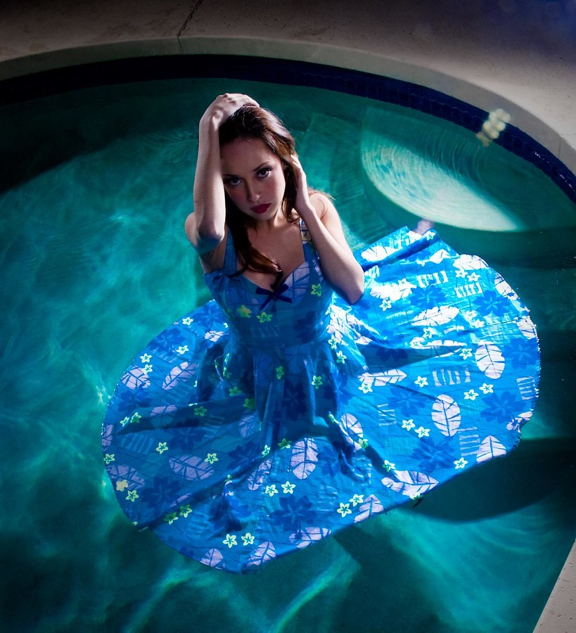
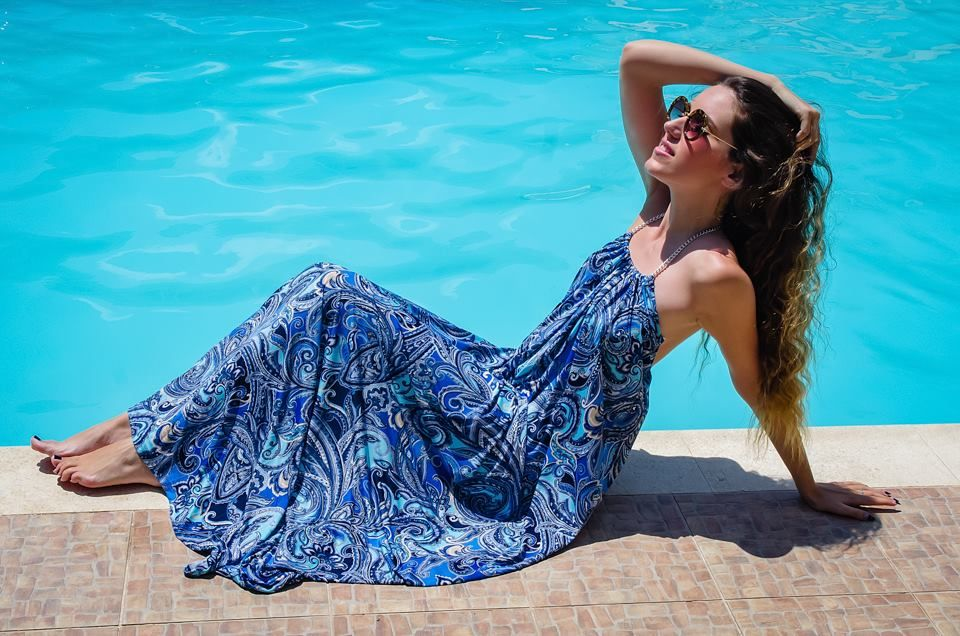
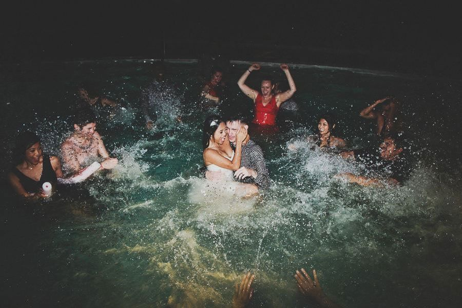

Activities
Photoshoot
Susana Hot Spring serves as an ideal setting for family gatherings,reunions and photoshoot. Here, amidst the soothing sounds of bubbling springs and chirping birds, families come together to celebrate love, laughter, and shared experiences. Whether it's a small intimate gathering or a grand reunion of extended relatives, Susana Hot Spring provides ample space and amenities to accommodate every need. Picnic areas dotted with lush greenery offer the perfect setting for al fresco dining, while barbecue pits beckon grill enthusiasts to showcase their culinary skills. At the heart of it all, Susana Hot Spring serves as a sanctuary of rejuvenation and bonding, where time stands still, and memories are etched into the fabric of our lives. As visitors depart, they carry with them not only the echoes of laughter and the warmth of shared moments but also a renewed sense of vitality and connection. In a world filled with hustle and bustle, Susana Hot Spring stands as a testament to the enduring power of nature to heal, inspire, and unite us all.
 Family Gatherings
As children frolic in the designated play areas, laughter fills the air, creating lasting memories of joy and camaraderie. Meanwhile, adults partake in leisurely walks along nature trails, exploring the hidden treasures of Marinduque's countryside. Guided by the gentle breeze and the melodious symphony of nature, guests embark on a journey of discovery, forging deeper connections with both the environment and each other. In addition to relaxation and family bonding, Susana Hot Spring offers a diverse array of activities to cater to varied interests and preferences. For the adventurous souls, water sports such as snorkeling and kayaking provide exhilarating experiences amidst the crystal-clear waters of nearby streams. Meanwhile, cultural enthusiasts can indulge in immersive workshops and presentations, gaining insights into the rich heritage and traditions of Marinduque.
